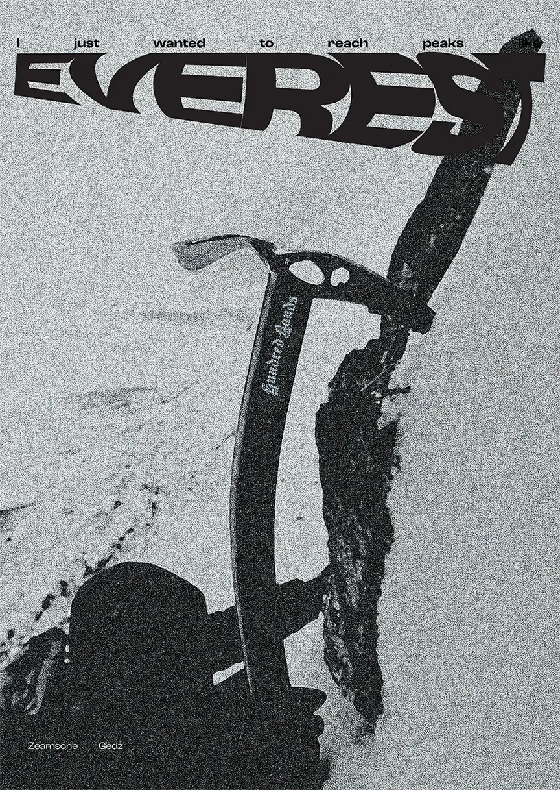
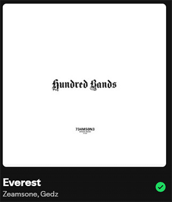

Everest
The poster depicts a mountaineer during a high-altitude ascent. At the center of the composition is an ice axe featuring the "Hundred Bands" logo, referencing the album of the same name. The main headline, "I just wanted to reach peaks like Everest," is taken from the song Everest by Żeamsome and Gedz, released in 2019 on the Hundred Bands album.
The main headline, "I just wanted to reach peaks like Everest," is taken from the song Everest by Żeamsome and Gedz, released in 2019 on the Hundred Bands album.

The project was created as a visual interpretation of ambition, perseverance, and overcoming personal limitations. Its raw monochromatic aesthetic and pronounced grain give the piece the appearance of archival mountain photography. The distorted "EVEREST" logotype serves as the dominant typographic element, emphasizing the intensity of the climb, the challenges involved, and the monumental nature of the mountain itself.